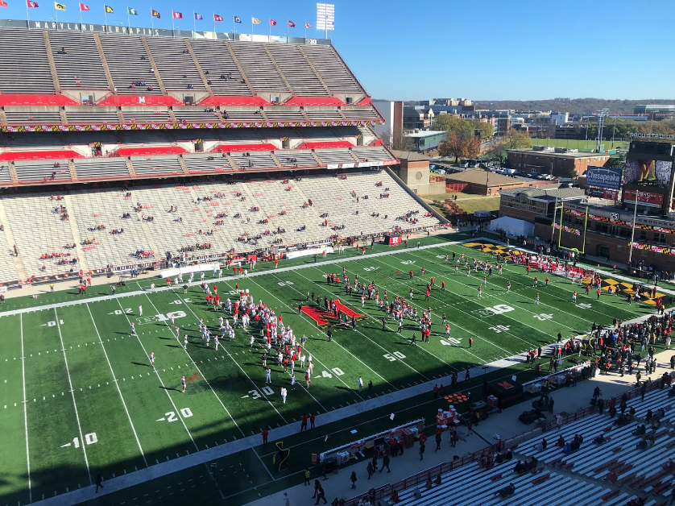

If you watch sports for a period of time, you might have heard about “home field advantage.” The belief is that a
team has better odds at playing the same opponent when it is done from the comfort of their own stadium. Is this
true? If so, which sports are impacted the most by it? What could be the reason why? This is an attempt to
better understand the influence of this advantage through looking at home results of the top five most popular
major league sports in America, over the past five years.
Before piling the results, a few adjustments
had to
be made to make the results of each sport as equal to each other as possible. For example, the NHL awards an
“overtime loss” as half of a win. This, though, makes the percentages unequal. For the sake of this chart, all
overtime losses are credited as full losses. Additionally, the MLS awards three points for a win and one for a
tie. To keep the winning percentages equal across all sports, ties were credited as half of a win. The
NHL/NBA/MLS are categorized in the year when the season ended. The NFL also extends to the next year, but is
categorized in the year the season started, because that was when most of the regular season games were played.
For the 2022 NFL season, the data is collected up until week 12.
Right away, it is clear that home field advantage does impact games. Across the five sports, the home team has a
56% chance of winning. Only one league in one year did home teams lose more on average – the NFL in 2020, when
stadiums were empty or limited due to the COVID-19 pandemic. The NFL also has the smallest sample size, with
only 8 or 9 home games in a season. As a result, the average fluctuates the most. The NBA, NHL, and MLB are all
relatively similar, but the NBA used to have the home team win on average much more than is currently the case.
The decline in NBA home-court advantage is nothing new. In 2015, ESPN noticed a trend of declining home-court
win percentage dating back to 1975. The article estimated that added reliance on three-point shooting has led to
less fouls, and less reliance on referees. Referee bias is estimated by the Chicago Booth Review as the biggest
factor determining why home teams are more likely to win.
Then, floating high above all the rest is the
MLS.
The easy explanation would be that soccer in general has the greatest home field advantage. This
might
be true – especially as lower scoring could potentially lead to higher odds of a game being dictated by one
penalty. When looking at the top five most popular soccer leagues (and the MLS), the odds of the home team
winning (57%) is almost the same compared to America, but the games also seem to have been more severely
impacted by the COVID-19 pandemic. When looking at the medians between soccer leagues (58% home winning
percentage) and other American sports leagues (54% home winning percentage), there is a greater difference.
Even when compared to other soccer leagues, the MLS still hovers over the rest. The most likely explanation is
parity. The MLS imposes drafts and salary caps, which encourages that each team has a chance to win. As a
result, The Athletic reports that the MLS has had more champions and more top-five finishers than any of the
five major European soccer leagues. With the talent more equally dispersed, there is more reliance on other
factors to dictate the outcomes of games – like the home crowd. In European leagues, teams are much more likely
to buy out the best players, making them far more likely to win against weaker opponents, even as the away
team.
Of the major sports in America, soccer seems to be the most impacted by home field advantage. All
of
the major sports are impacted, at least a little bit, by some form of having a home crowd, however. This can
mainly be explained through referee biases. Being in a league with more parity may also cause the home team to
win more often.